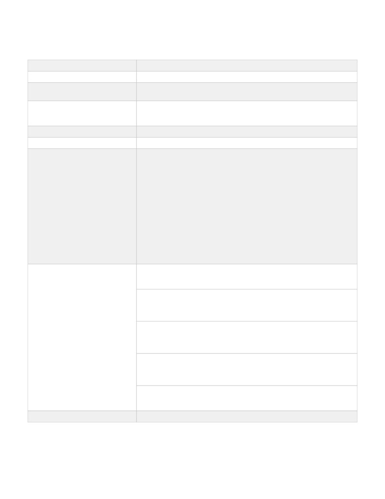
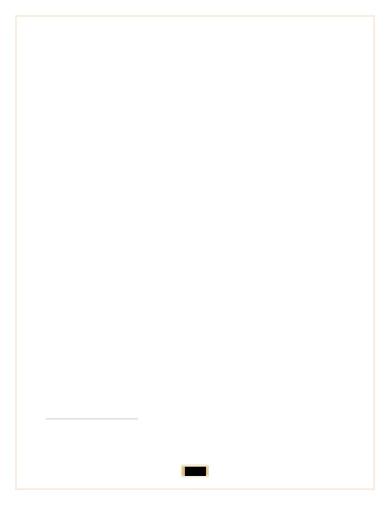

Journal of Ocean Engineering and Science
IoT
--Manuscript Draft--
Manuscript Number:
Article Type:
Full length article
Keywords:
IOT
Internet Of Things
Corresponding Author:
Mohammad sadra Davaei dehaghani
Tehran University: University of Tehran
IRAN (ISLAMIC REPUBLIC OF)
First Author:
Mohammad sadra Davaei dehaghani
Order of Authors:
Mohammad sadra Davaei dehaghani
Abstract:
The Internet of Things, or more precisely, the Internet of Things, means connecting
physical devices such as vehicles, appliances, smartphones, etc. Together through
special software, sensors, etc. Is. In this relatively fledgling technology, all devices
connected to a network can automate their work, show a series of special responses
fully automatedly based on changes in their surroundings, and can also exchange
different data with other network devices without any human intervention. The main
form of this new technology is based on wireless networks and the internet and its
main purpose is to improve the efficiency and accuracy of different devices.
The Internet of Things, or an IoT, along with the above, can help people economically
and even avoid wasting time, but the term IoT can be defined for most devices you
know, which can be considered as anIoTforother technologies. In general, the Internet
of Things includes devices such as smartphones, headphones, vehicles, lamps,
refrigerators, coffee machines, security and warning systems, and many other homes
and mobile devices. Its architecture was designed at the Auto-ID Center at the
Massachusetts Institute of Technology known as MIT.
Suggested Reviewers:
Dr. Tiffany S Severson
SSeverson@gmail.com
It is an excellent book for decision makers looking to explore how to monetize IoT.
Dr. Diane D Tibbits
DTibbits@gmail.com
The beauty of this article is that it makes very clear that the value created has to be
greater than the cost occurred.
Dr. Lisa P Kinnear
PKinnear@gmail.com
This is an well article suitable for anyone who is in the business of making money using
technology and the Internet.
Dr. George A Whyte
AWhyte@gmail.com
Mr. mohammad sadra davaei dehaghani has written a readable article that presents an
immediately useful framework to implement the internet of things.
Dr. Maria D Wheeler
DWheeler@gmail.com
The author certainly knows a lot about IoT.
Opposed Reviewers:
Powered by Editorial Manager® and ProduXion Manager® from Aries Systems Corporation
Manuscript File
The subject of the article
IoT
Internet Of Things
Author
Mohammad Sadra Davaei
Summer 2021
Table of Contents
Summary
1
Introduction
1
History
2
IoT: Meaning and Concept
2
IoT: A Huge Transformation
3
IoT: Nature and Efficiency
5
IoT: The First Evolution of the Internet
7
IoT: Its Related Industries
7
The main applications of IoT
7
Home Lighting
8
Home Security Systems
8
Home Thermal Systems
8
Coffee Machine
8
Wearable Gadgets
9
Feeders
9
Smart City
9
Holy Cow(!)
9
Anytime, anyplace, anything
9
Internet (all) objects: its applications
10
Internet (all) objects: its application in the field of medicine, health, and hygiene
10
Inform
10
Diagnosis
10
Drug Use Monitoring and Drug Management
11
Health Organizations
11
Cost reduction
11
Improve treatment outcomes
11
Improve disease management
11
Improving medication management
11
Internet (all) objects: its application in the field of agriculture and livestock
11
Internet (all) objects: its application in the field of education
12
Creating new jobs affected by the development of the Internet of Things
12
IoT: Advantages, Opportunities, and Challenges
13
Benefits of IoT
13
IoT Opportunities
13
IoT Challenges
13
IoT Challenges: Implementing IPv6
13
IoT Challenges: Sensor Energy
14
IoT Challenges: Standards
14
IoT Challenges: Security
14
IoT Challenges: Privacy
15
IoT Challenges: Increasing Demand
15
IoT Challenges: Bandwidth
16
IoT as a network for networks
16
The Importance of IoT
17
How do devices connect via the Internet of Things?
17
What companies are working on this technology?
18
IoT connects objects or object discourse
18
IoT Legal Issues
18
Legal Issues of IoT: Data Ownership
18
Legal Issues of IoT: Responsibility
18
Conclusion
18
Alternatives
22
Books
23
Summary
will be exchanged over the Internet and
between different people by ultra-smart
The Internet is a global network that connects
devices. Ultra-smart devices such as next-
all users, but the structure of this network is
generation smartphones, the
5GInternet,
changing. We all use laptops, tablets, and
modern email, and smart social networks
smartphones to communicate with our
make our personal affairs and tasks different
friends. Most of the information between us
in the future, it can be clear that IoT will have
and friends is exchanged through1servers that
a great impact on our lives of all users.
run the site and email software, the Internet is
a global network that connects all users,
Introduction
ultimately it can be said that the Internet is
The Internet of Things, or more precisely, the
made up of users, client-side devices, and
Internet of Things, means connecting
servers, but a new member is being added to
physical devices such as vehicles, appliances,
this collection. And it is referred to as23
smartphones, etc. Together through special
"Things” or objects, the word is derived from
software, sensors, etc. Is. In this relatively
the phrase "the Internet of Things" or an IoT,
fledgling technology, all devices connected
an "object" may be addressed to any device
to a network can automate their work, show a
that has a sensor to exchange information,
series of special responses fully automatedly
examples of these sensors include
based on changes in their surroundings, and
temperature sensors, traffic sensors and
can also exchange different data with other
energy measurement sensors, for example,
network devices without any human
temperature sensors can be used in a
intervention. The main form of this new
thermostat, a sensor to measure the amount of
technology is based on wireless networks and
electricity consumed in homes. Traffic
the internet and its main purpose is to
sensors fit in traffic signals. All of these
improve the efficiency and accuracy of
sensors send information to the destination
different devices.
device so that these devices make decisions
based on this information. This is happening,
The Internet of Things, or an IoT, along with
shortly many of our work and information
the above, can help people economically and
1 . Information
3 . ServerServer -
2 . ClientClient-
1

even avoid wasting time, but the term IoT can
with manufacturers, operators, or other
devices, in other words, modern technology
be defined for most devices you know, which
in which any creature (human, animal or
can be considered as anIoTforother
objects) can send data through
technologies. In general, the Internet of
communication networks, whether internet
or Ethernet. In this technology, the objects
Things includes
devices
such as
around us can collect useful data from their
smartphones, headphones, vehicles, lamps,
surroundings through different sensors and
refrigerators, coffee machines, security and
transfer them to a central system to process
and make the necessary decisions.67
warning systems, and many other homes and
mobile devices. Its architecture was designed
According to the definition provided by
at the Auto-ID Center at the Massachusetts
Cisco
Internet
Business
Solutions
Institute of Technology known as MIT.4
Group8(IBSG), "IoT" simply refers to a point
of time where more objects are connected to
History
the Internet than humans. For this purpose,
The term "IoT" was first used by Kevin
most of the devices we use daily (such as
Ashton in 1999, describing a world in which
cars, homes, and equipment inside it
everything, including inanimate objects, has
and everything we deal with in some
its own digital identity (with 5 IP) and allows
way) use the Internet.
computers to organize and manage them. The
Internet currently connects all people, but
In general, it can be said that IoT is a
with the Internet of Things, all objects are
network of physical objects embedded
connected.
with electronic components, software,
IoT: Meaning and Concept
sensors, and connections so that they
can provide more value and services
The Internet of Things is a network of
physical objects embedded with electronic
by exchanging information with the
components, software, sensors, and
manufacturer, operator, or other
connections so that they can provide value
and services by exchanging information
devices. Each member of the IoT alone
4 . Massachusetts Institute of Technology
7 . Ethernet - Is (LAN) Ethernet TechnologyYi Berra
5 . IP - is and codes Address That is to the devices
Network Connection Place
Connected toNetnet I'm assigned.YBe Internet
8 . Cisco - Sa Company Platform Larger And more
Protocol Stands IP
famous. Tol Company Dexter Tajeh Zat Networking
6 . Data
and Communications in DanIs
2
can be identified by the system
inventions
observed
throughout
embedded in it and can also interact
human life.
with
the
existing
Internet
Now imagine that the Internet of
infrastructure. The Internet of Things
Things, which represents the next
is a computational concept to describe
transformation of the Internet, is a very
a future in which physical objects
big and significant leap forward in
connect to the Internet one after the
collecting, analyzing, and distributing
other and interact with other objects. In
data that can be converted into
this technology, everything is awarded
information, then into knowledge, and
a unique 9 ID and an IPthat can send data
ultimately into wisdom and awareness.
to the specified database.
From this perspective, IoT is a very
IoT: A Huge Transformation
important phenomenon.
The Internet of Things will transform
Currently,
"IoT" projects
are
everything, including our own. This
underway, successful implementation
may seem a little exaggerated at first,
of these projects will ensure things
but to understand it, it's enough to
such as the loss of the gap between the
think for a brief moment about all the
rich and the poor, improving the
changes the Internet has made in our
distribution of global resources for the
world, vast and fundamental changes
benefit of those most in need of those
in
education,
communication,
resources, and will also help us
business, science, governments, and in
understand the planet in which we
humans in general. The Internet is one
reside. With its occurrence, we can
of the greatest and most powerful
take developments into our own hands
instead of passive behavior on the way
9 . ID - Characteristic and Ύی Ververde's name.ی Dude
Berraی Ververde
3
to human goals. Of course, it should
than 0.1 vehicles per human being.
also be noted that there are already
According to the definition provided
many obstacles that jeopardize the
by IBS, until 2003, there was no such
development of the Internet of Things.
thing as "IoT", but it should also be
Converting 10IPv4 to 11IPv6, having a
noted that until then, smartphones had
cumbersome set of standards as well as
not yet stepped in, but in 2010, when
developing energy sources for millions
we faced the dramatic growth in the
or even billions of sensors are such
number of tablets and smartphones, the
risks.
number of devices connected to the
Internet was linked to the Internet. The
As
businesses,
governments,
border reached 12.5 billion vehicles,
standards, and academics work
while the number of people on the
together to eliminate these obstacles
planet was 6.8 billion. 12
and problems, the IoT is making its
way toward evolution.
At that time, for the first time in
history, the ratio of the number of
Currently, the implementation of the
devices connected to the Internet to
Internet of Things will not be possible
humans became several 1.84.
for all our devices, but gradually with
the smartening of the devices and
Examining existing numbers and
cheaper sensors, this will be realized.
global statistics, it is estimated that the
"Internet of Things" was born in
In
2003, when approximately
6.3
history between
2008 and
2009.
billion people lived on earth, the
Experts in the field have estimated that
number of devices using the Internet
the IoT could connect more than 50
was about 500 million, a ratio of fewer
billion devices worldwide by
2020,
10 . Internet Protocol version 4 -
Protocol یاNetnet
11 . Internet Protocol version 6 - Protocol یاNetnet
Version ۴
Version 6
12 . Smart Phone
4
which will bring the global market's
connected to the Internet, there is more
value to about
$7.1 trillion by the same
potential for the world to become a
year, with nearly $6 trillion spent on the
better place to live!
Internet of Things over the next five
Currently, serious attention has been
years, given the current state of
paid to the Internet of Things in many
technology. And the rapid and
countries, including Germany, the
stunning growth of technology is not
United Kingdom, the USA, China,
taken into account, perhaps the number
South Korea, India, Brazil, Singapore.
of objects connected to the Internet at
IoT: Nature and Efficiency
that time is far beyond the numbers
estimated.
Today, the Internet of Things involves a
wide range of aspects of our lives and is not
Moreover, the proportion of objects
limited to smart devices. Robots, sensors,
tools, and machinery from different industry
connected to the Internet may not seem
groups are gradually solidifying their
like a significant number to the number
foothold on the platform. The necessity of
an asset holding system that leads to
of human beings, but it should not be
millions of savings for our organization or
hidden from the fact that the number of
industry, intelligent measurements of
environmental factors, etc. Tracking assets
people calculated in this ratio is
to prevent theft or loss, systems of
equivalent to the entire world
prediction insensitive and risky cases,
intelligent guidance systems, etc. Informs us
population, many of whom do not even
of the position of the Internet of Things in
have access to the Internet. If we
the industry.
include the number of people who
What are the difference between the internet
we are currently using and the kind of
have access to the Internet in this
Internet that we communicate with each other
equation,
this
ratio
grows
through objects? The Internet of Things is the
tremendously. As more things like
presence of various objects, devices, and
bulls (!) Water pipes, humans, shoes,
sensors in a network that communicates with
trees, and even other animals are being
each other through the Internet without any
5
human interactions involved in this
Currently, much of the information and data
discussion.
we see on the Internet is provided by humans.
Whether someone puts a photo or data on the
The Internet of Things refers to most devices,
internet or uploads it. If humans are to
objects, humans, plants, and animals that
constantly put information on the Internet, it
have a unique identifier and can
requires a lot of time and time, but the
automatically transmit information between
Internet of Things provides us with a lot of
each other without human interactions in the
data without taking much time from us.
transmission of data. Imagine, for example,
that you own a farm where you have to
Imagine that in every car there is a sensor that
examine the conditions and conditions of the
automatically reports information, in which
soil in any circumstances and at any time. To
case you can get useful information from
do this, you need to measure different soil
your devices at any time. The Internet of
criteria at different times and enter them into
Things also provides more scenarios.
the computer.
Nowadays, everyone dreams of owning a
smart home. This means that the devices and
In the IoT scenario, you don't need to
objects are in a smart home and are present in
measure anymore, because you use sensors
a network so that they can be controlled even
that connect to any plant on the farm and
with smartphones, and in other words, have
automatically perform the measurement and
information at our fingertips when the clothes
transmit them. This sensor makes each plant
are finished, or when the coffee is ready or
a unique identifier and converts them into
even when you're outdoors. And you forget
online plants.
to turn off the light bulbs so that you can
The Internet of Things refers to the
control all the concepts of the smart home,
networking of various objects that are
but it is necessary to have a network between
allowed to communicate on the network
devices or in other words to provide the
using smart appliances. Objects with a unique
integration of objects.
IP address as an independent device are
present in the network and connect to the
Internet using the desired sensor.
6
IoT: The First Evolution of the Internet
caused us to make more of our events instead
of reacting merely to what's going on around
Citing what has happened in reality, the
us.
Internet has always been on a steady and
In addition, many of the locations that have
steady path of growth, development, and
so far been inaccessible are joining the
improvement, but there hasn't been an
internet-influenced range. A large number of
extraordinary change!
(Which, of course,
patients devour small devices that work on
requires more discussion. Today's Internet
the Internet to help doctors identify the
does what it intended during the ARPANET
causes of their illness. Also, small sensors
era (a computer network originally built for
connected to the Internet can be used in
the U.S. Institute for Advanced Defense
plants, animals, and other geological
Research Projects) (phase one), for example,
features. On the other side of the spectrum,
initially multiple communication protocols
the Internet is expanding into an out-of-Earth
such as
space as well. This program has been done
Apple Talk (Apple Mac OS Protocol),
through Cisco's IRIS program.
Token Ring
(a loop-shaped local network
developed by IBM), and IP existed, but
IoT: Its Related Industries
today the Internet world is widely
- Health
standardized based on IP.
- Construction
The Internet of Things has become
- Transportation
- Banks
remarkably important because it is somehow
- Food Services
the first fundamental transformation of the
- Oil Exploration
Internet, in fact, the "Internet of Things" is a
- Agriculture
huge leap that leads to the production of
- Smart Buildings
programs that have a very high potential for
- And...
improving the ways people live, learn, work
The main applications of IoT
and have fun; Currently, many sensors work
on the Internet by "IoT", such as thermometer
The most obvious and main
sensors, barometers, seismometers, light
application of IoT is smart homes,
meters, humidifiers, and stress measurement
the phrase "smart homes" in simple
sensors. The existence of such sensors has
7
terms, i.e. connecting home and its
interiors together, through a fully
automated system, describing the
Home Security Systems
most important applications of IoT
Users can easily control CCTV cameras 24
technology in smart homes:
hours a day, 7 days a week, via the Internet
Home Lighting
of Things and feel comfortable about home
security.
If you use IoT-connected lamps in
The user can also talk to people in front of
your smart home, these lamps can
the house through the microphone by
detect when you leave the house or
installing the camera and microphone in
front of the khon hash, before opening the
even the rooms, which means you no
door.
longer have to worry about turning off
the light bulbs before leaving the
Another useful and interesting feature is that
house, because thanks to the IoT, the
users can also use doors that open and close
automatically in their own homes as well.
light bulbs are automatically turned
To open and close, these doors use a series
off.
of special sensors embedded in them.
Another important application is that
Home Thermal Systems
you can easily sit in a corner of the
house through a controller device
Various devices on the market can be used
(such as a smartphone) and turn the
to adjust the heating of the house. Such
light bulbs off and on, the interesting
devices typically can turn heating systems
thing is that from the point of view of
on and off by notifying them of indoor and
outdoor air temperatures. If you connect
theory, even if you're around the
these devices to the Internet of Things, they
world, you can easily control the light
can turn the heating system on and turn it off
bulbs through your device! This
when you reach the desired temperature, and
important feature can make the house
the interesting thing is that all of this is done
more secure when it's empty, for
automatically.
example, you can turn on the light
Coffee Machine
bulbs at night with your phone so that
those around you think you're at home
If you're so lazy that you're not even in the
and don't think about entering your
mood to turn off a coffee machine, IoT is a
house without permission.
pain test. Coffee machines can automatically
turn off after you've eaten your coffee.
8
increase passengers' security by using
special sensors and, of course, the Internet.
The user can set the device to turn on
Smart City
automatically at a certain time of day,
assuming it's in the evening and you're back
Smart cities are one of the most attractive
from work, you don't have to go to turn on
categories of the Internet of Things, its
the device and make coffee anymore, just
ability to smarten up cities. In a smart city, it
order coffee from your phone after entering
is possible to control almost everything
the house.
through a special room by utilizing
advanced automated systems. 13
Wearable Gadgets
Imagine smart things like public
Another application of IoT, which is
supervision, water supply, power supply,
growing every day around the world, is
transportation, and even urban security, or a
linked to its use in wearable gadgets such as
smart traffic management system in the city,
smartwatches and wristbands. Large
controlling the timing of traffic lights and
companies such as Google and Samsung
offering suitable routes to drivers through
have made major investments in IoT
displays in cars. To create such a system,
technology in recent years.
traffic lights, cars and traffic sensors in the
city must be connected to an integrated
Wearable gadgets include a series of sensors
network, which is only part of the
and use special software to collect their
applications of the Internet of Things to
users' information, which ultimately
build smart cities.
analyzes the data collected and reports the
results to the user.
Holy Cow(!)
Different companies intend to equip various
wearables in the field of health, fitness, and
In the world of objects, even cows will be
the like to the Internet of things.
connected and supervised. Sensors are
planted in the ears of cows, allowing farmers
Feeders
to monitor the health of cows and their
trajectory to ensure that milk and meat are
The use of technology in cars essentially
healthy and abundantly supplied for public
follows a core goal: optimizing the
use.
performance of internal components.
Anytime, anyplace, anything.
However, when cars are equipped with IoT
technology, they can take good care of
In 2017, one of the activists of the
themselves. The IoT can also make cars
profession, Evan Williams, presented a story
13 . Smart City
9
that attracted the attention of everyone,
IoT continuously offers tools for integrating
which is as follows:
medical and medical systems with greater
accuracy and efficiency, thus reducing
From any time, any place connectivity for
treatment costs considerably and improving
anyone, we will now have connectivity for
treatment outcomes.
anything!
Therefore, IoT is an opportunity that
medical and hospital centers can optimize
From any time, any place communication for
their treatment process and resources.
anyone, we will now communicate!
Hospitals, for example, can use the Internet
of Things to manage assets, as well as to
Not long ago, activists working in this field
control temperature and humidity in
made a dramatic change in the name of the
operating rooms.
IoT or the Internet of Things.
It should be noted that 4 million patients in
2020 can see their health conditions as well
TheInternet of Things (IoT) has created a
as their treatment.
new nomenclature that has been favored by
Some of the advantages and uses of the
many enthusiasts in this field, which is IoE
Internet (all) of things in the field of
or, in other words, the Internet of Everything
medicine, health, and wellbeing are as
follows:
(Internet of All Things). But it should be
noted that it has not been limited to just a new
Inform
naming, and the IoE is functional beyond
A device is placed inside the body of a heart
IoT.
patient who constantly analyzes his heart
rate and automatically sends a signal to a
Internet (all) objects: its applications
person's mobile phone as soon as the
situation deteriorates. By receiving this
IoT can play a significant role in areas such
signal, the mobile phone informs the
as electronic health, smart city, smart home,
medical assistance forces and can even
urban security, automotive services,
report the exact location of the person.
intelligent energy management including
electricity, smart logistics, environmental
Diagnosis
monitoring of agriculture and livestock,
banking and payment, training, etc. have.
-
Exploration of nano-robots into
Internet (all) objects: its application
people's bodies and collecting
information by them
in the field of medicine, health, and
-
Send other data in different ways
hygiene
-
Summing up all the data received by
artificial intelligence with the help of
10
IoT and the possibility of diagnosing
to treat it before the disease gets out of
diseases
control.
Drug Use Monitoring and Drug
Improving medication management
Manufacturing, as well as managing
Management
medicines, is a major cost, but these costs
can be better managed by processing IoT
-
Monitoring the appropriate amount
and its related devices.
and time of drug use to physicians
Internet (all) objects: its application in
and preventing the patient's risky
behaviors in drug use
the field of agriculture and livestock
-
Helping to improve the management
of medicines by regulatory,
One of the goals that IoT has considered for
regulatory, manufacturers,
agriculture is to increase production and
distributors, and healthcare providers
optimal allocation of resources. The
-
Preparation of smart pharmaceutical
ecosystem is a smart farm including robots
products based on IoT to monitor
and elevators, nodes, IoT platforms, and
drug regimen and personal hygiene
application systems that by intermittently
-
Smart drugs help reduce the risk and
examining the weather, soil, and plant
disadvantages of pharmaceutical
conditions, collect and send relevant
companies and health care providers
information to make decisions for the
-
Reduce human error
necessary measures intelligently.
Health Organizations
Some of the advantages and applications of
the Internet (all) of things in the field of
agriculture and livestock are as follows:
Cost reduction
When medical providers benefit from IoT,
-
Remote management of farms and
patient monitoring is carried out on a real-
animal husbandry centers
time basis, so the number of patient visits by
-
Weather forecasting and decisions to
the doctor decreases and costs are reduced
protect the product or use drones
naturally.
-
Utilizing agricultural equipment and
tools connected to the Internet such
Improve treatment outcomes
as unmanned tractors
Communicating with medical solutions
-
By installing IoT tools in the field of
through cloud computing allows physicians
agriculture, it is possible to grow by
to instantaneously use the information and
20% per year
more accurately diagnose diseases.
-
The meaning of soil monitoring used
Improve disease management
to grow crops, plants, and
greenhouses
Given that patients are constantly monitored
and cared for, medical providers will be able
11
-
Intelligent animal management to
-
Get information from students' close
track their health at different stages
sensors from urban environments or
to produce suitable animals (meat,
historical Macans. Examples of
milk, etc.)
tagged plant markers in a public
-
Placing their information for local
garden can be sent to a student's
vendors
phone and provide general and
-
Determination of their organ and
specialized names, planting dates,
non-organic nutrition
edible use, medicinal use, adult plant
-
Irrigation Management and Control
size, and country.
-
Management and control of livestock
-
The possibility of synchronizing the
-
Weight determination and nutrition
physical space of the university
-
Head of livestock
using information obtained from
-
Monitor the farm
sensors embedded in objects
including library resources, writing
Internet (all) objects: its application
page boards, game pages, robots, etc.
in the field of education
Creating new jobs affected by the
Some of the advantages and uses of internet
development of the Internet of Things
(all) objects in the field of education are as
follows:
-
The future disruption of many jobs
resulting from the development of
-
Personalizing the learning
the Internet of Things and the
experience for students: Creating
creation of new jobs at three levels,
unique and adaptable learning
including senior level and
opportunities according to each
management, monitoring level
student's talents and needs according
(implementation, repair,
to the analysis of information from
maintenance, technical support
text, audio, and video
system), and control level with the
-
Provides a generally concerned view
help of IoT, for example, the creation
of each student in the classroom,
of the post of chief executive of IoT
including grades, interests, and
has been strengthened since 2016.
learning patterns, allowing teachers
Other prominent businesses will be
to recognize patterns in student
the future of IoT designers (with a
groups and address their individual
clear vision of the future of
needs.
businesses and the promotion and
-
Possibility of registering the entry
implementation of initiatives) as well
and exit to the library, opened books,
as coders.
their usage pattern, time to study
-
One of the most important skills in
electronic textbooks, etc.
the era of IoT is business
intelligence, information security,
12
mobile software development,
Benefits of IoT
hardware engineering, networking,
etc. Outlined
1- Facilitating communication
-
The effect of IoT on all domains and
2- Loss of space and space
making fundamental changes in them
3- Massive and free flow of information
-
20% energy saving with the help of
4- Likening cultures
IoT
-
Reducing traffic congestion and
IoT Opportunities
smog in cities with the help of
sensors
1- Save time and money
-
Performing more automatic standard
2- Increased sense of security
tasks at home (such as dimming the
lights when watching movies,
3- Facilitating lifestyles
displaying energy consumption, etc.)
IoT Challenges
-
Converting walls into connected and
dynamic devices to control the home
security system and ...
IoT Challenges: Implementing IPv6
-
Monitoring the health of people at
Pedestrians Construction IPv6 Even
home and reporting on their health
though you use the address-
(the effective role of wearable
technologies in this direction)
Hay IPv4 (Internet Protocol Version
-
The scope of the impact of IoT on
4) In February
2010 it was almost
the political sphere and elections is
also predicted to help electors choose
abandoned, but in practice, it didn't
the best candidate
happen, because Ali Despite the many
benefits IPv6 (Internet
Protocol
Version 6) Like creating a B Finally
IP Address Hay Yizta, still the device
countless things use IPv6 Support Not
IoT:
Advantages, Opportunities, and
They do. These conditions have a
Challenges
potential impact on slowing the growth
As you are concerned, we face several
and development of the “Internet of
advantages, opportunities, and challenges in
every field of activity. Here are the
Things” It has. In addition to this؛
advantages, opportunities, and challenges of
Because
of
the
automatic
the IoT field.
13
configuration capacity and feature
IoT Challenges: Standards
While most improvements have been
better
security, IPv6 Network
made during the standards period,
Management Facilitates Slow.
more than the current progress is
IoT Challenges: Sensor Energy
needed, especially in areas such as
For the IoT to reach its maximum
security, privacy, architecture, and
capacity, sensors need to be able to
communications. 14IEEE is one of the
maintain themselves. what does that
organizations working to resolve these
mean? Assuming that the battery is
issues by ensuring that IPv6 packages
going to replace the billions of sensors
can be detected and tracked through
that are on different surfaces of the
different types of networks.
planet this is almost impossible. What
is needed is to find a natural and
IoT Challenges: Security
Security is perhaps the biggest
environmental way through which
challenge in the IoT, for example, by
sensors themselves can generate
sabotaging the traffic lights system, a
energy, such as energy gain through
city can be disrupted, of course,
vibration, light, or airflow. During a
security on the current Internet is also
breakthrough, scientists announced the
a big challenge, but in the Internet of
production of a commercially
Things this issue becomes larger and
bioavailable nano-producer, a flexible
more distribution of the network and
chip that uses body movements such as
consequently more points of entry into
pinching a finger
(!!) to generate
the system are one of the reasons for
electricity.
this. They are supposed to be
connected to the Internet, usually have
a simpler structure and architecture
14 . Institute of Electrical and Electronics Engineers
(IEEE)
14
than computers, making it difficult to
The Internet of Things could become
implement security tools. The latest
one of the great technological
reason is that the Internet of Things is
developments shortly and change the
getting much closer to real-life than the
way we live in many ways.
current Internet. Infiltrating such a
IoT Challenges: Privacy
network would be equivalent to
The concept of privacy has always
infiltrating the daily lives of users!
been used with security, but in this
discussion, it is appropriate to pay
Since many devices are connected via
serious attention to it, because in the
the Internet in this technology, hacking
Internet of Things more private
them can cause irreparable losses such
information is placed on the network
as leaking sensitive personal and
than in the current situation. One of
economic information.
this private information is people's
There are always two reasons for the
lifestyles, what hours we spend at
convenience of hacking devices based
home, what movies we watch and even
on the Internet of Things: the first is
what we eat! Today only
10% of
that the mentioned devices are
Internet traffic is encrypted, but in the
connected over the Internet and the
future, an increase of this figure seems
Internet is generally at risk of hacking.
necessary.
The second is that many of the devices
IoT Challenges: Increasing Demand
based on this technology are built by
Increasing demand for network-
some small companies, and these
connected equipment will increase
companies have not had enough
competition in this area.
(On the
resources and time to put powerful
contrary, of course, it is not far-
security structures in their devices.
fetched, i.e. with more advertising for
the
greater
profitability
of
15
industrialists, the greater the demand
The number of IP addresses in internet
from consumers!) In any case,
protocol
version
4
is
(232)
or
manufacturers and service providers
4.294.967.296
billion
(another
around the world will present their
technical limitation, of course, the
protocols, platforms, and technologies,
solution is clear: use 128 addresses Bit
and as a result, compatibility between
IPv6(the number of IP addresses in
different equipment may be in trouble.
Internet Protocol version 6 is equal to
As the IoT structure is still evolving, the
(2128)or (3.4 × 1038)whose addressing
entry of standardization bodies
space appears to never be finished.
(including
IEEE)may also limit
progress.
IoT as a network for networks
IoT Challenges: Bandwidth
The Gartner Institute's prediction that
Currently, the concept of "IoT" consists of a
50 billion devices will be connected to
not-so-large set of scattered networks, each
the Internet by 2020 will require much
created for a particular purpose. For example,
today's vehicles have different networks to
more bandwidth than the current
control the operation of the engine, security
bandwidth of networks. In addition,
system, and communications system, etc.
many of these devices require specific
Have. Today's homes and hotels also have a
services for proper operation. For
variety of systems such as air conditioning
example, warning devices that
systems, telephone service, security, cooling
automatically alert relief forces require
and heating, lighting, and so on. As the
limited time delays. Using new
"Internet of Things" continues to grow, these
networks and many other networks will
network architectures, such as data-
connect to the Internet with greater security,
oriented architecture, these needs can
more analysts, and greater management
be
answered.
End
32-bit
capabilities. (Table No. 1)
IPv4addresses,
16
This allows the "Internet of Things" to help
modem, but this definition and allegory are
humans achieve their goals more powerfully.
not enough.18
It is an Internet service
provider), and such equipment is composed.
Ironically, this situation reflects the
The basic function of the Internet is the rapid,
conditions that industrial technology faced
secure, and reliable transmission of
and experienced in the early days of the
information from one point to another, on the
network era. For example, in the late 1980s
other hand, the web is the layer of software
and early 1990s, Ciscobegan its work by
that works on the Internet, the primary role of
bringing together individual networks using
the web is to provide an interface to make the
multi-protocol rotting, and finally, this led to
flow of information across the Internet
the creation and use of IPs as a common
usable.
network standard with the topic "IoT",
history is repeating itself, although on a much
How do devices connect via the
larger scale.
Internet of Things?
The Importance of IoT
The Internet of Things uses a variety of
ways to connect thousands of devices and
Before addressing the reasons for the
share data between them, and offices and
importance of the "Internet of Things," it
homes typically use Wi-Fi or Bluetooth to
seems essential to first understand the
connect devices. It should be noted that
difference between the Internet and the "vast
these two are the most popular ways to
global network (web)" that are sometimes
do1920this.
used interchangeably. The Internet is the
physical layer or network of switches (the
In addition, LTE networks and satellite
switch is a device that plays the role of an
technologies can be used to connect
interface in the network, the switch can be all
electronic devices via the Internet of Things,
devices on the network such as computer
which are not very common.
systems, printers, CCTV, network phone, etc.
The 151617 routers (the router is actually what
we most know as a high-speed Internet
15 . physical layer
18 . Router
16 . network layer
19 . Wifi
17 . Switch
20 . Bluetooth
17
What companies are working on this
IoT Legal Issues
technology?
Legal Issues of
IoT: Data
It would have been better to ask this question
Ownership
differently. What companies are not working
on this technology?! Big names such as
Which entity will own the raw data that has
Samsung, LG, Apple, Google, and Philips are
been collected regularly? Confidential
currently working on connected devices, and
information is like blood in the veins of any
countless small companies are also engaged
organization. Can the service provider use the
in research in this area.
data collected to serve other customers, if
business
relationships
between the
IoT connects objects or object
organization and the provider are severed,
discourse
can the organization access its previous data?
Energy vendors?
IoT isn't just connecting objects, it's the
discourse of objects with each other
Legal
Issues
of
IoT:
The general idea of IoT technology is to
Responsibility
receive, store and send information from the
If sensors or communications do not work
environment to analyze them and ultimately
well in an IoT application and human or asset
provide better and smarter services to the
damage occurs, who will be held
end-user. In other words, the Internet of
accountable? For example, a smoke sensor
Things can be considered as the next
may not transmit information well and burn a
evolution of the Internet, which has a big leap
house. Or one of the medical instruments
in the ability to collect, analyze and distribute
causes serious harm to the person. When
data.
there are multiple suppliers for a single piece,
which one should be held accountable?
Conclusion
-
Creating new communication, marketing, and... With the help of the Internet of Things
18
-
Connect most devices with the help of IoT
-
Increasing ways to communicate with audiences
-
The need for public relations to enter the era of the Internet of Things
-
Preparing customers and audiences to face it
-
Efforts to promote products and services by the new conditions
-
Helping customers to promote their business
-
Monitoring data-based needs and responding to them
-
Discovering the golden communication and interactive opportunities ahead of the
development of IoT capabilities
-
Taking advantage of new skills in the era of IoT, including technical, data, etc.
-
Familiarity and use of new methods of advertising, communication with the media, etc.
-
Identifying challenges in this area and trying to develop laws to protect customers'
information and privacy
-
Adherence to these laws and knowledge of the various laws governing the Internet of
Things
-
Media entry into the field of data journalism and the necessity of aligning public relations
with them in this direction
Alternatives
1)
Creating and strengthening the industrial ecosystem of IoT in the country in a way that
leads to the growth, expansion, and acceptance of IoT technologies through the
participation of existing and new actors of the ICT industry (information and
communication technology).
2)
Orientation and strengthening the capabilities of companies with a history of electronics,
telecommunications, software for product development and technological innovation in
different layers, especially platform and services and applications of IoT promote and
culture
3)
Using the capacity and capabilities of various governmental and governmental sectors to
facilitate and encourage the participation of the industrial and service sectors of the
country in IoT projects with the investment of the non-governmental sector
4)
Increasing awareness and stimulating demand for the use of IoT services through a
general and specialized culture
5)
Promoting and strengthening Iran's IoT ecosystem based on open innovation while
preserving the intellectual property rights of innovators
6)
Special support for the activities of start-up companies with an emphasis on the
participation of universities, incubation centers, and technology science parks in the way
of hardware, platforms, software, and secure and native solutions of the Internet of
Things
22
7) Extroverted growth and development based on attracting international cooperation and
facilitating the presence of successful companies in international markets, especially in
the market of countries in the region
Books
1) Brynjolfsson Erik, The Second Machine Age: Work, Progress and Prosperity
in a Time of Brilliant Technologies
2) Greenfield Adam, Everyware: The dawning age of ubiquitous computing
3) Hazenberg Wimer, Huisman Menno and Cordoba Rubino Sara, Meta
Products: Building the Internet of Things
4) Jamthe Sudha, IoT Disruptions: The Internet of Things - Innovation & Jobs
5) Kellmereit Daniel and Obodovski Daniel, The Silent Intelligence
6) Norman Don, The Design of Everyday Things
7) Pfister Cuno, Getting started with the Internet of Things
8) Stachowiak Robert, Big Data and The Internet of Things
9) Qin. X and Gu. Y, Data Fusion in the Internet of Things, Procedia
Engineering, Vol. 15, 3023-3026, 2011.
23